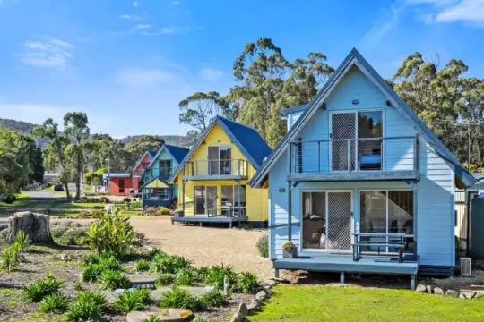
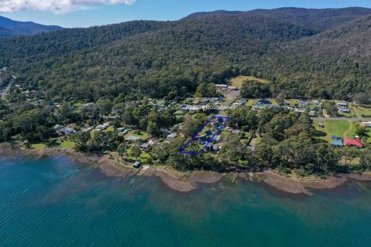
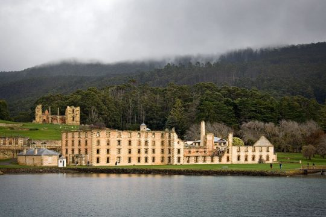

Waterfront accommodation on Little Norfolk Bay
Soon to be Isolé Little Norfolk Bay

Located on the waterfront at Little Norfolk Bay, Four Seasons Waterfront Villas is ideally positioned for exploring Port Arthur and the Tasman Peninsula. Enjoy a peaceful waterfront setting while staying within easy reach of the region’s historic sites, coastal walks and natural attractions.
Set across a peaceful waterfront property, each self-contained villa offers its own kitchen, living and dining areas, private entrance and easy access to the Little Norfolk Bay waterfront.
The Tasman Peninsula is home to an abundance of native wildlife, including wallabies, echidnas and a wide variety of birdlife. With plenty to see and do nearby, Four Seasons Waterfront Villas is a comfortable base for couples and families exploring the region.

Each villa is fully self-contained, with its own kitchen, dining and living spaces, and easy access to the Little Norfolk Bay waterfront.

Set directly on Little Norfolk Bay, the property offers peaceful water views and easy access to the foreshore.

Port Arthur Historic Site, spectacular coastal walks and some of Tasmania’s best-known natural attractions are all within easy reach.
Comfortable, well-presented villas equipped for an easy stay on the Tasman Peninsula.
Choose from our Standard Villas or Premium Waterfront Villa, each with two bedrooms, a private kitchen, bathroom and comfortable living spaces.
Ideally located for visiting Port Arthur Historic Site and exploring the walks, coastline and attractions of the Tasman Peninsula.
Set on the shores of Little Norfolk Bay, the property enjoys peaceful water views and easy access to the foreshore — an ideal place to unwind after a day exploring the Tasman Peninsula.
From sheltered bays and native wildlife to dramatic sea cliffs and coastal walks, the natural landscape is one of the Tasman Peninsula’s great attractions.
Enjoy changing views across Little Norfolk Bay, from calm mornings to colourful evening skies.